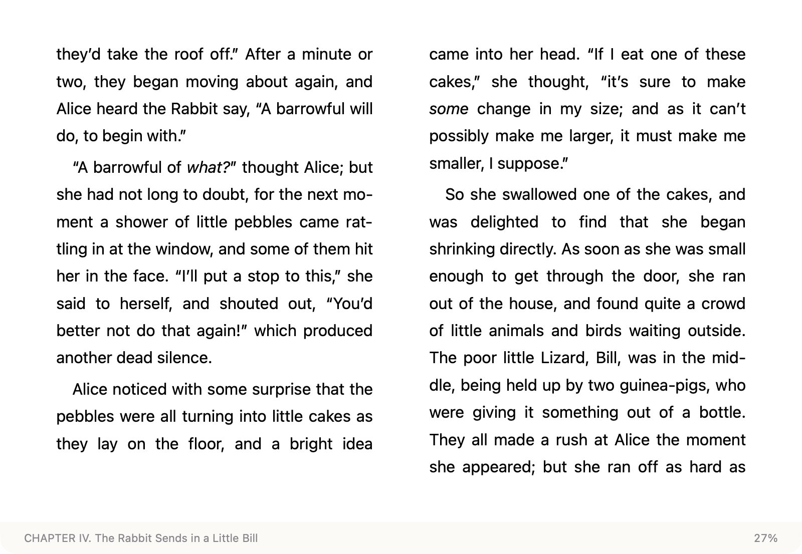
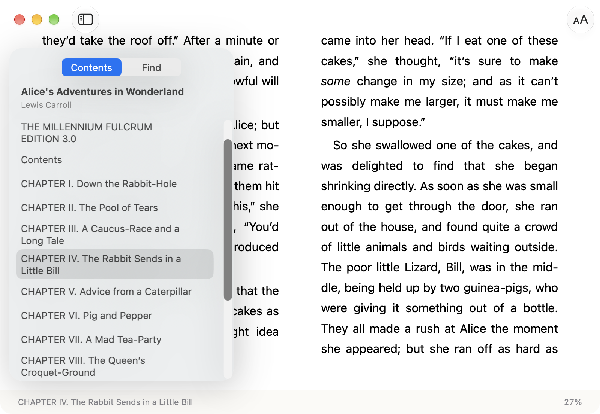

오픈 소스 Mac 전자책 리더 · EPUB · MOBI · AZW3 · PDF · FB2 · CBZ
두 번 클릭해 읽고, 창을 닫으면 끝.
책 한 권에 창 하나. 책장은 없고, 읽던 자리만 기억합니다.
오픈 소스 Mac 전자책 리더 · EPUB · MOBI · AZW3 · PDF · FB2 · CBZ
책 한 권에 창 하나. 책장은 없고, 읽던 자리만 기억합니다.

Leaf는 무료 오픈 소스 Mac 전자책 리더입니다. EPUB, MOBI, AZW3, PDF, FB2, CBZ 파일을 두 번 클릭하면 읽을 수 있고, 창을 닫으면 종료됩니다. 라이브러리도, 복사본도, 계정도 없습니다. 읽던 자리는 기억합니다. 네이티브 SwiftUI 앱, 약 5 MB, macOS 15 이상. Amazon과 관계없습니다.
라이브러리 없음. 복사본 없음. 계정 없음.
문서처럼 열리고, 닫으면 종료됩니다.
파일 이름을 바꾸거나 옮겨도 이어서 읽습니다.
메뉴, 단축키, 찾아보기와 번역. 모두 Mac 기본 기능. 한글 책은 Apple SD 산돌고딕 Neo로 또렷하게.
좋은 읽기는 세부에 있습니다.
내 읽는 속도로 추정합니다.
글꼴, 굵기, 간격, 폭. 프리셋 다섯 가지, 내 것도 저장. 세로쓰기 책은 세로 그대로.
번호를 클릭하면 바로 그 페이지에 각주가 뜹니다.
⌘F로 책 전체 검색, ⌘L로 어디든 이동.
하이라이트, 메모, 책갈피. Markdown이나 Kindle 클리핑으로 내보내기. 단어는 한 번에 찾아보기.
EPUB, MOBI, AZW3, PDF, FB2, CBZ. 변환 없이.
종이, 세피아, 다크. 한국어를 포함한 8개 언어.
⌘T를 누르면 페이지 위에 떠오릅니다. 본문은 그대로.

Readest는 기능이 가장 많습니다. Apple Books는 Mac에 기본 포함. Calibre는 장서 관리에 가장 좋습니다. Leaf는 한 가지만 합니다: 책을 엽니다.
| Leaf | Readest | Apple Books | Calibre | |
|---|---|---|---|---|
| MOBI · AZW3 | ✓ (DRM 없음) | ✓ | 지원 안 함 | ✓ |
| 파일 열기 | 제자리에서, 라이브러리 없이 | 제자리에서 열고 라이브러리에 추가 | 라이브러리로 가져오기 | 라이브러리 중심, 뷰어는 단독 실행 가능 |
| 남는 것 | 읽던 자리, 하이라이트, 책갈피를 자체 폴더에 | 라이브러리 항목: 제목, 경로, 표지 | 라이브러리 안의 복사본 | 라이브러리 데이터베이스 |
| 창을 닫으면 | 앱 종료 | 계속 실행 | — | — |
| 하이라이트와 메모 | ✓ Markdown과 Kindle 클리핑으로 내보내기 | ✓ | ✓ | ✓ |
| 다른 플랫폼 | Mac 전용 | iOS · Android · Windows · Linux · Web | iPhone · iPad | Windows · Linux |
| 인터페이스 | 네이티브 (SwiftUI) | 웹 (Tauri) | 네이티브 | Qt |
| 다운로드 크기 | 약 5 MB | 약 67 MB | macOS 내장 | 약 350 MB |
| 요구 사항 | macOS 15+ | macOS 12+ | — | macOS 14+ |
| 가격 · 라이선스 | 무료 · GPL-3.0 | 무료, 클라우드 동기화는 유료 옵션 · AGPL-3.0 | 무료 · 독점 | 무료 · GPL-3.0 |
Readest는 2026년 10월 30일 확인: 릴리스 0.12.16과 macOS 앱 직접 테스트. Apple Books와 Calibre는 2026년 10월 3일 Apple Books 도움말, calibre 9.15.0 for macOS, calibre 뷰어 설명서로 확인.
Leaf는 Apple 공증을 받지 않았습니다. 처음 실행할 때 한 번만 허용하세요.
Leaf.dmg를 열고 Leaf를 응용 프로그램 폴더로 드래그합니다.
Leaf를 두 번 클릭합니다. macOS가 개발자를 확인할 수 없다고 하면 완료를 클릭합니다.
시스템 설정 › 개인정보 보호 및 보안에서 아래로 스크롤해 그래도 열기를 클릭합니다.
macOS 15 이상이 필요합니다. Kindle 스토어 구매 도서처럼 DRM이 있는 책은 열 수 없습니다.
손은 키보드 위에.
| 페이지 넘기기 | ←→Space |
| 목차 | ⌘T |
| 책에서 찾기 | ⌘F⌘G |
| 퍼센트나 위치로 이동 | ⌘L |
| 설정 | ⌘, |
| 글자 크게 / 작게 | ⌘=⌘- |
| 실제 크기 | ⌘0 |
설치와 사용에 관한 질문.
Leaf를 설치한 뒤 Finder에서 파일을 두 번 클릭하거나, 오른쪽 클릭해 다음으로 열기 › Leaf를 선택합니다. DRM이 없는 파일이어야 합니다.
Leaf는 DRM 없는 EPUB, MOBI, AZW3와 PDF, FB2, CBZ를 책마다 별도 창으로 엽니다. 읽는 속도로 추정한 남은 시간, 위치 번호, 조판 프리셋, 제자리 각주, 책 안 검색이 있고, 하이라이트, 메모, 책갈피와 내보내기도 됩니다. 창을 닫으면 종료. 스토어도 계정도 없습니다.
Readest는 크로스 플랫폼이고 라이브러리, 동기화, 읽어주기가 있습니다. Leaf는 Mac 전용이며 일부러 덜 합니다: 라이브러리 없음, 동기화 없음, 책을 닫으면 종료. 읽던 자리, 하이라이트, 책갈피는 자체 폴더에 두고 책 파일은 건드리지 않습니다. 약 5 MB, Readest는 약 67 MB.
네. 무료이며 GPL-3.0 오픈 소스입니다.
Leaf는 Apple 공증을 받지 않았습니다. 한 번 열어 경고를 닫은 뒤 시스템 설정 › 개인정보 보호 및 보안에서 그래도 열기를 클릭하세요. 한 번만 하면 됩니다.
DRM 없는 파일만 가능합니다. Kindle 스토어에서 산 책은 보통 DRM이 있어 Leaf로 열 수 없습니다.
아니요. Leaf는 Amazon과 무관한 독립 오픈 소스 프로젝트입니다. DRM 없는 EPUB, MOBI, AZW3를 Mac에서 읽기 위한 것으로, 스토어도 계정도 없습니다.
없습니다. Leaf는 책을 있는 자리에서 열고 가져오거나 복사하지 않습니다. Leaf 자체는 책마다 읽던 자리만 기억합니다. 다른 Mac 문서 앱처럼 최근 파일은 파일 › 최근 사용 항목 열기에 표시됩니다.